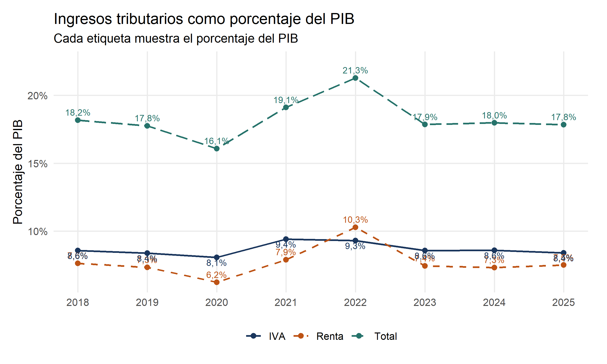
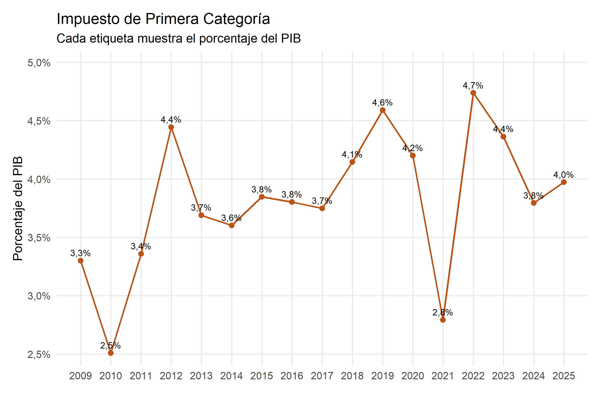
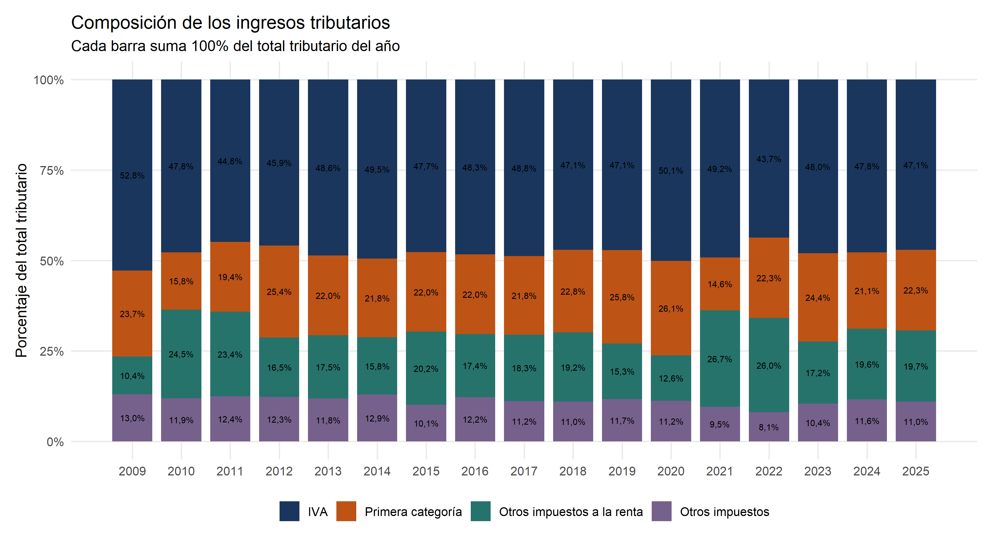
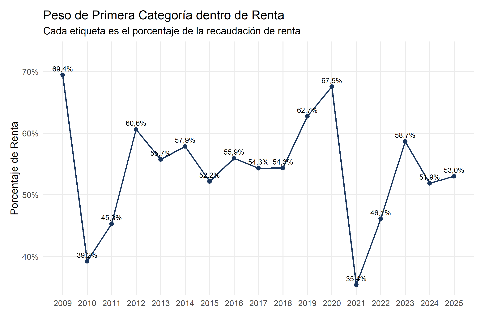

¿Cuál era la recaudación antes de las propuestas de rebaja tributaria? El anuncio de abril plantea reducir la tasa corporativa de 27% a 23%. La recaudación agregada contextualiza la discusión, pero no calcula el efecto de cambiar esa tasa. Fuente del anuncio.
Conceptos para leer esta página
PIB: valor de los bienes y servicios producidos en el país durante un período. Expresar impuestos como porcentaje del PIB permite compararlos con el tamaño de la economía.
Recaudación tributaria: dinero que el Estado obtiene mediante impuestos. No es igual al presupuesto total ni al gasto público.
Impuesto de Primera Categoría: impuesto que grava rentas empresariales. Es una referencia cercana a la tributación corporativa, pero no representa toda la recaudación de Renta.
IVA: impuesto al valor agregado aplicado al consumo de bienes y servicios.
En 2025, el total de ingresos tributarios de esta tabla equivale a 17,84% del PIB. Renta representa 7,49% e IVA 8,40%. Primera Categoría equivale a 3,97% del PIB y a 53,0% de Renta. Son cifras preliminares.
Recaudación agregada, 2018–2025
Las etiquetas de este gráfico indican qué porcentaje del PIB representa cada serie en cada año. Mantiene la vista agregada para situar Renta, IVA y el total.
Código
# Mantener la vista agregada reciente. Cada etiqueta es porcentaje del PIB.g_actual <- d |>select(anio, Total=total, Renta=renta, IVA=iva) |>pivot_longer(-anio, names_to='tipo', values_to='pct') |>mutate(etiqueta=paste0(n(pct,1),'%'),ajuste=case_when(tipo=='IVA'~1.25, TRUE~-0.7))print(ggplot(g_actual,aes(anio,pct,colour=tipo,linetype=tipo))+geom_line(linewidth=.8)+geom_point(size=2)+geom_text(aes(label=etiqueta,vjust=ajuste),show.legend=FALSE,size=3)+scale_colour_manual(values=c(IVA=paleta[1],Renta=paleta[2],Total=paleta[3]))+scale_linetype_manual(values=c(IVA='solid',Renta='dashed',Total='longdash'))+scale_x_continuous(breaks=2018:2025)+scale_y_continuous(labels=scales::label_number(suffix='%',decimal.mark=','),expand=expansion(mult=c(.05,.13)))+labs(title='Ingresos tributarios como porcentaje del PIB',subtitle='Cada etiqueta muestra el porcentaje del PIB',x=NULL,y='Porcentaje del PIB',colour=NULL,linetype=NULL))

Fuente: SII, serie 2009–2025, hoja Consolidados. 2024 provisional; 2025 preliminar.
Cómo leer el gráfico. El total cae de 18,2% del PIB en 2018 a 16,1% en 2020, alcanza 21,3% en 2022 y termina en 17,8% en 2025. Renta fluctúa más que IVA y explica buena parte del máximo de 2022. Como todas las líneas dividen por el PIB, una variación puede reflejar cambios en la recaudación, en el tamaño de la economía o en ambos.
Primera Categoría: referencia más próxima al impuesto corporativo
Primera Categoría es un componente de Renta y es la referencia institucional más cercana a la tributación corporativa. Las etiquetas muestran su porcentaje del PIB; no son una estimación del costo de cambiar una tasa legal.
Código
# Primera Categoría es la referencia más cercana al impuesto corporativo.g_primera <- serie_completa |>transmute(anio, pct=primera_categoria, etiqueta=paste0(n(primera_categoria,1),'%'))print(ggplot(g_primera,aes(anio,pct))+geom_line(colour=paleta[2],linewidth=.8)+geom_point(colour=paleta[2],size=2)+geom_text(aes(label=etiqueta),vjust=-.7,size=3)+scale_x_continuous(breaks=2009:2025)+scale_y_continuous(labels=scales::label_number(suffix='%',decimal.mark=','),expand=expansion(mult=c(.05,.16)))+labs(title='Impuesto de Primera Categoría',subtitle='Cada etiqueta muestra el porcentaje del PIB',x=NULL,y='Porcentaje del PIB'))

Fuente: SII, serie 2009–2025, hoja Consolidados. Cada etiqueta es porcentaje del PIB; 2024 provisional y 2025 preliminar.
Cómo leer el gráfico. Primera Categoría no sigue una trayectoria estable: en los años recientes pasa de 2,8% del PIB en 2021 a 4,7% en 2022 y 4,0% en 2025. La serie registra recaudación efectiva y no la tasa legal del impuesto. Por eso no permite calcular cuánto recaudaría una tasa de 23% mediante una regla proporcional simple.
Composición del total tributario
Aquí el denominador cambia: cada barra suma 100% de la recaudación tributaria total del año, no 100% del PIB. Esto permite ver cuánto pesa IVA, Primera Categoría, el resto de Renta y los demás impuestos dentro del total.
Código
# Dentro de cada barra, los componentes suman 100% del total tributario de ese año.composicion <- serie_completa |>transmute(anio,IVA=100*iva/total,`Primera categoría`=100*primera_categoria/total,`Otros impuestos a la renta`=100*otros_renta/total,`Otros impuestos`=100*otros_impuestos/total) |>pivot_longer(-anio,names_to='componente',values_to='participacion_pct') |>mutate(componente=factor(componente,levels=c('IVA','Primera categoría','Otros impuestos a la renta','Otros impuestos')),etiqueta=paste0(n(participacion_pct,1),'%'))stopifnot(all(abs(tapply(composicion$participacion_pct,composicion$anio,sum)-100) <1e-8))print(ggplot(composicion,aes(anio,participacion_pct,fill=componente))+geom_col(width=.82)+geom_text(aes(label=etiqueta),position=position_stack(vjust=.5),size=2.45)+scale_fill_manual(values=c(IVA=paleta[1],`Primera categoría`=paleta[2],`Otros impuestos a la renta`=paleta[3],`Otros impuestos`=paleta[4]))+scale_x_continuous(breaks=2009:2025)+scale_y_continuous(labels=scales::label_number(suffix='%',decimal.mark=','),limits=c(0,100))+labs(title='Composición de los ingresos tributarios',subtitle='Cada barra suma 100% del total tributario del año',x=NULL,y='Porcentaje del total tributario',fill=NULL))

Fuente: elaboración propia con la hoja Consolidados del SII. Cada barra suma 100% del total tributario de su año; 2024 provisional y 2025 preliminar.
Cómo leer el gráfico. En 2025, IVA representa aproximadamente 47,1% del total tributario, Primera Categoría 22,3%, otros impuestos a la renta 19,7% y los demás impuestos 10,9%. El gráfico compara composición, no montos: un componente puede aumentar su participación aunque su recaudación no crezca, si los otros componentes caen más.
Peso de Primera Categoría dentro de Renta
Este último gráfico usa otro denominador: muestra qué parte de la recaudación de Renta corresponde a Primera Categoría. Ayuda a separar esa referencia del total de Renta, que también incorpora otros componentes.
Código
# Cuánto representa Primera Categoría dentro de la recaudación de renta.peso_primera_renta <- serie_completa |>transmute(anio,pct=primera_categoria_pct_renta,etiqueta=paste0(n(primera_categoria_pct_renta,1),'%'))print(ggplot(peso_primera_renta,aes(anio,pct))+geom_line(colour=paleta[1],linewidth=.8)+geom_point(colour=paleta[1],size=2)+geom_text(aes(label=etiqueta),vjust=-.7,size=3)+scale_x_continuous(breaks=2009:2025)+scale_y_continuous(labels=scales::label_number(suffix='%',decimal.mark=','),expand=expansion(mult=c(.05,.16)))+labs(title='Peso de Primera Categoría dentro de Renta',subtitle='Cada etiqueta es el porcentaje de la recaudación de renta',x=NULL,y='Porcentaje de Renta'))

Fuente: elaboración propia con la hoja Consolidados del SII. Cada etiqueta es porcentaje de Renta; 2024 provisional y 2025 preliminar.
Cómo leer el gráfico. Primera Categoría aporta 53,0% de la recaudación clasificada como Renta en 2025, pero esa proporción cambia mucho entre años: fue 67,5% en 2020 y 35,4% en 2021. Esto confirma que “Renta” contiene más componentes y que no debe tratarse como sinónimo de impuesto corporativo.
Lectura y limitaciones
La serie varía entre años: una recaudación mayor no prueba una tasa legal mayor y una caída no identifica su causa. Cambian las bases tributarias, la actividad, las devoluciones y el PIB usado como denominador.
Renta no es solo impuesto corporativo. No se multiplica toda la recaudación de renta por la reducción propuesta: eso produciría un costo fiscal engañoso.
Primera Categoría tampoco mide por sí sola el efecto de la propuesta. Es una referencia de recaudación, no la base gravada, el universo de contribuyentes afectados ni el costo fiscal de una reducción de tasa.
Se usa la fila TOTAL INGRESOS TRIBUTARIOS, que el libro distingue de INGRESOS TRIBUTARIOS NETOS, ajustada además por cuentas no tributarias. No se mezclan las dos filas.
Los valores originales están almacenados como fracción del PIB; el código los multiplica por 100. IVA corresponde al agregado de la tabla, no a la fila de IVA bruto.
En el gráfico de composición, Otros impuestos a la renta = Renta − Primera Categoría y Otros impuestos = Total − Renta − IVA. Los cuatro componentes se verifican para que sumen 100% en cada año.
No hay distribución del beneficio por hogar o empresa ni estimación causal sobre empleo o inversión.
Preguntas que estos datos dejan abiertas
¿Qué empresas y regímenes quedarían afectados, cuál es la base gravada y cuánto costaría la medida bajo respuestas distintas de inversión y recaudación? Para responder se necesita el informe financiero y escenarios explícitos. La recaudación histórica no permite obtener ese costo con una regla proporcional simple.